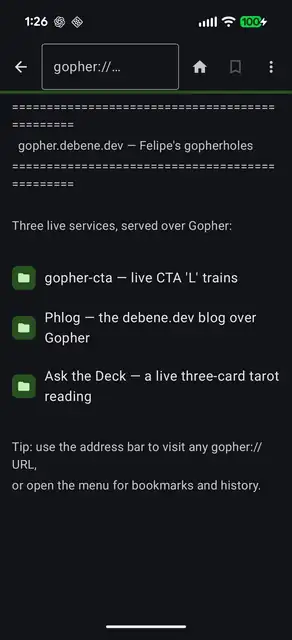
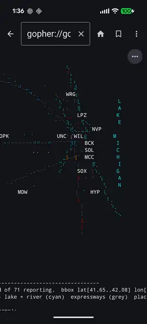

DeBurrow
إنترنت ومتصفحات
DeBurrow is a modern, native Android client for the Gopher protocol — the pre-web, text-first way to browse "Gopherspace". Built with Kotlin and Jetpack Compose. Features: * Browse Gopher menus, read text files, and view images * ANSI-color and word-wrapping text viewer — colored .ansi art renders i
✓ ترخيص مفتوح (MIT) · آخر تحديث: 2026-08-04
2.0.4الإصدار
2.0 MBالحجم
MITالرخصة
Open in Kanzتحميل APK (2.0 MB)
Download APK
SHA-256: 5d8dbca2b9a169b45aa53955780b183e7fb37e1a91302bf53ee130a71a6bc0e7


امسح الكود لفتح صفحة التطبيق
Scan to open this app page
لو كنز مش متثبت عندك: نزّل متجر كنز.
Not installed? Get the Kanz store.